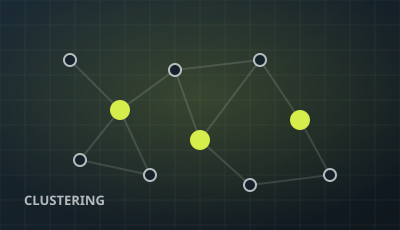

01
Data analysis · Access control
Cutting 3,000+ access rules down to 700
A role-based access-control model had grown to 3,000+ configurations — impossible to audit, reason about, or safely change.
Reduced configuration complexity by 77% — from 3,000+ configs to ~700 — turning an unmanageable matrix into something a team can actually maintain.
Python
PCA
Hamming clustering
−77%